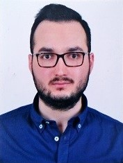

Ferhat Çatalbaş

Summary
I am a dedicated professional with a solid track record in both Sales and Customer Support roles. With one year of experience as a Sales Specialist and three years in Customer Support, I bring a wealth of expertise in effectively engaging with customers and clients to meet their needs.
In my role as a Sales Specialist, I honed my skills in understanding customer requirements and providing tailored solutions to drive sales success. I am adept at building and maintaining strong client relationships while consistently meeting sales targets.
During my three-year tenure as a Customer Support Specialist, I developed exceptional problem-solving abilities and a deep understanding of customer satisfaction. I am experienced in addressing customer inquiries, resolving issues, and ensuring a positive customer experience.
My versatile background equips me with valuable skills that can be applied to various aspects of business operations. With a strong aptitude for understanding and meeting the unique needs of corporate clients, I am also well-positioned to provide effective solutions and drive growth in any role that demands a customer-centric approach.
Education
- Management, Boğaziçi University (2022-Present)
- Business Administration, Anadolu University (2021-2024)
Work Experience
- Senior Sales Specialist - CARRTELL
May 2023 - Present
- Responsible for direct sales of the company’s products into a specified business area and effectively manage all stages of sales cycle.
- Served as primary contact for clients that are not transitioned to a Client Advisor. Responsible for overall account maintenance and account rounding.
- Designed and built innovative demonstrations to support sales opportunities.
- Collaborated effectively with cross-functional teams to ensure customer satisfaction and account maintenance.
- Developed and nurtured client relationships, demonstrating an ability to anticipate needs and provide creative solutions.
- Assisted in the creation of technical account configuration documentation and technical statements of work. Prepared and provided client facing technical follow-up calls and documentation.
- Earned the respect of all agents and customers.
Skills
- Never-ending desire to grow and learn.
- Demonstrates effective time management skills, meeting deadlines while managing multiple priorities.
- Strong interpersonal skills and the ability to work effectively with diverse individuals at all organizational levels and exercise good judgment.
- Meticulous attention to detail with a clear, methodological approach to problem solving.
- Quick, analytical thinker, excellent business analysis and problem-solving skills as well as basic accounting skills.
- Excellent verbal and written communications skills with strong experience creating reports and presentations fit for the audience.
- Collaborative, team-player with experience working with cross-functional teams.
Language
Turkish - Native
English - Advanced (C2)
French - Intermediate (B1)
Urdu - Intermediate (B1)
Hindi - Intermediate (B1)
Internships
University of Management and Technology - 2018 Summer (Certificate)
Lahore, Pakistan
- Interdisciplinary Learning: Participated in a multidisciplinary program that blended language studies with courses in modern political history, sociology, and religious studies, broadening my knowledge base.
- Regional Expertise Development: Worked closely with local experts and faculty to gain comprehensive insights into regional dynamics, language proficiency, and cultural nuances.
- Strengthening Language Proficiency: Leveraged the opportunity to strengthen language skills in Urdu, improving my ability to engage with local communities.
- Cross-Cultural Communication: Developed strong cross-cultural communication skills and a deep appreciation for the diversity of these regions, essential for fostering global understanding.
- Academic Enrichment: Contributed to my academic growth by studying regional politics, history, and socio-cultural aspects, enhancing my understanding of the complex issues in Pakistan and India.
World Culture Forum - 2019 Summer (Certificate)
- Impactful Cultural Exchange: Facilitated cultural exchange initiatives, fostering an atmosphere where diverse backgrounds were celebrated and respected among peers.
- Strengthening Language Proficiency: Leveraged the opportunity to strengthen language skills in Hindi, improving my ability to engage with local communities.
- Global Regional Insight: Acquired a global perspective on regional expertise within an academic context, recognizing the importance of regional dynamics in shaping research and cultural studies on a global scale.
- In-Depth Cultural Exploration: Immersed myself in the vibrant cultures, politics, societies, and languages of Pakistan and India, gaining profound insights into the dynamics of these regions.
- Community Engagement: My internship in India enabled me to interact with local communities, fostering a profound appreciation for the nation's vibrant and pluralistic society.
Certifications
Mastery Training in Communication - January 2019 (Certificate)
Institute of Experiential Design Teaching
- Inner Transformation: My ability to understand an individual's inner dynamics and identify potential issues greatly improved. This was a fundamental step in establishing healthy relationships.
- Skills: Communication is the cornerstone of relationships. The course extensively covered various aspects of communication and helped me enhance my abilities in perception and expression.
- Structure of Relationships: The course taught the fundamental laws and dynamics of relationships. Consequently, I can better manage expectations within relationships.
- Strategic Communication: By learning general communication strategies and persuasion techniques, I have become more effective in communication and can establish relationships based on stronger foundations.
- Personal Development: The course supported my personal development. By gaining a better understanding of myself and others, my ability to resolve conflicts and leadership skills have improved significantly.
Hobbies
- Swimming (Annual membership to the municipal pool)
- Football (2017 amateur football league player)
- Organizing events such as football matches
- Playing team games
- Going to local artists' concerts
- Following global news and technical developments
- Problem-solving games
- Travel - Domestic and international
References
Eyüp Kara - Co-Founder, Payeni
Muhammed Altın - Product Manager, Kuveyttürk Participation Bank